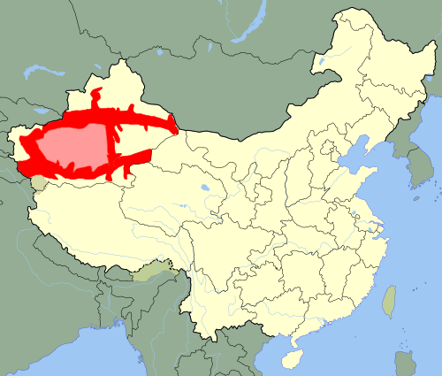

Uygurlar Doğu Asya'dan kaynaklanan ve kültürel olarak bu bölgelerle bağlı bir Türk azınlık etnik grubudur.
Uygurlar Çin'in resmî olarak tanıdığı 55 etnik azınlıktan biridir.
Çin'in kuzeybatısındaki Sincan Uygur Özerk Bölgesi, Uygurların memleketi olarak tanınır.
Bununla birlikte, Çin Hükûmeti, Uygurları yalnızca çok kültürlü bir ulusa (Zhonghua minzu) ait olan bölgesel bir azınlık olarak tanır ve Uygurların yerli bir halk olduğu yönündeki kavramı reddetmektedir.
Uygurlar geleneksel olarak Tarım Havzası içerisindeki Taklamakan Çölü'nde bulunan vaha yerleşimlerinde yaşarlar.
Bu bölge tarihî olarak Çin, Moğollar, Tibetliler ve farklı Türk devletleri dahil olmak üzere birçok farklı medeniyetin yönetimi altında olmuştur.
Uygurlar 10. yüzyılda gitgide İslamlaşmaya başlamış ve 16. yüzyılda Uygurların çoğu İslam dinini artık benimsemiş durumdaydı.
Bu zamandan beri İslam, Uygur kültürü ve kimliğinde önemli bir rol oynamıştır.
Sincan'daki Uygurların yaklaşık %80'inin hâlen Tarım Havzası'nda yaşadığı tahmin edilmektedir.
Sincan Uygurlarının geri kalan kısmının çoğu ise tarihî Çungarya bölgesinde bulunan ve günümüz Sincan Uygur ÖB'nin başkenti olan Urumçi şehrinde yaşamaktadır.
Çin sınırları içerisinde Sincan'ın dışındaki en büyük Uygur topluluğu Hunan Eyaleti'nin merkez kuzeyindeki Taoyuan İlçesi'nde bulunur .
Orta Asya ülkelerinde, bilhassa Kazakistan, Kırgızistan ve Özbekistan'da büyük Uygur diaspora toplulukları vardır; Dünya çapındaki birçok diğer ülkede de daha küçük Uygur diaspora topluluklarına rastlanabilir.
20. yüzyılın başlarından bu yana özellikle günümüz Çin sınırları içerisinde yaşayan Uygurlar, kendilerini dinî ve etnik bir çatışmanın merkezinde bulmuşlardır.
Uygur halkı resmî olarak Çin Ulusu'nun bir parçası olarak sayılsa da, birçok Uygur fiilen "Doğu Türkistan" diye bir devletin kurulmasını amaçlayan bir bağımsızlık hareketini desteklemektedir.
Bir milyondan fazla Uygurun 2015'ten beri Sincan yeniden eğitim kamplarında tutulduğu tahmin edilmiştir.
Bu kamplar, Genel Sekreter Şi Cinping'in Hükûmeti altında kuruldu; kampların ana amacı ise ulusal ideolojiye uyum sağlamaktır.
Çin'in Uygurlara yönelik muamelesini eleştirenler, Çin Hükûmeti'ni 21. yüzyılda Sincan'da bir Çinlileştirme politikasını yürütmekle suçlar ve bunu Uygurlara yönelik bir soykırım ya da etnosit olarak nitelendirirler.

Genetik
Günümüz Uygurlarda büyük oranda genetik çeşitlilik mevcuttur.
2008 yılında Hotan İli'nde yürütülmüş bir araştırmada genetiği incelenen yerli Uygurlarda %60 Avrupa/Batı Asya ve %40 Doğu Asya/Sibirya genetik kalıtımının var olduğu bulunmuştur.
İleri çalışmalar, Güney Sincan Uygurlarındaki Avrupa/Batı Asya genetik kalıtımının (%52) Kuzey Sincan Uygurlarınkinden (%47) daha fazla olduğunu bulmuştur.
2009 yılında daha geniş kapsamlı örnek verileriyle yapılmış bir çalışma, Uygurlardaki Doğu Asya genetiğinin %70 olup bunun Avrupa/Batı Asya genetik kalıtımının orantısından (%30) daha yüksek olduğunu bulmuştur.
2017 yılında Sincan'ın 14 farklı bölgesinden gelen toplam 951 Uygurun gen numuneleriyle yapılmış bir gen analizi, Tanrı Dağları'nın doğal bir bariyer oluşturduğunu ve bu bariyerin Sincan'ın güneybatısı ile kuzeydoğusundaki Uygur nüfusları arasında genetik farklılıklara sebep olduğunu buldu.
Bu analiz, doğudan batıya doğru gidince genetik bileşenlerin değiştiğini belirtmektedir:
Avrupa bileşenleri %25'ten %37'ye ve Güney Asya bileşenleri %12'den %20'ye yükselirken, Sibirya bileşenleri %17'den %15'e, Doğu Asya bileşenleri de %47'den %29'a düşer.
Bu çalışma, yaklaşık 3.750 sene öncesindeki insanların yerleşim eğilimlerini saptar; bu, 4.000-2.000 sene öncesine dayanan ve Avrupa fiziksel özellikleri olan Tarım mumyaları ve 750 sene önce yer almış daha yeni bir yerleşim dalgasıyla örtüşmektedir.
Bu analiz, Uygurların en çok diğer Orta Asya halklarına, bunun ardından da Doğu Asya ve Batı Avrasya halklarına benzediklerini ileri sürmektedir.
Uygur nüfuslarında büyük oranda genetik çeşitlilik olsa da bu farklılıklar Uygurlar ile Uygur olmayanlar arasındaki farklılıklardan küçüktür.
Dil
Uygurca, Türk dil ailesinin Karluk koluna aittir.
İsim benzerliğine rağmen çağdaş ("yeni") Uygurca, Sibirya Türk dillerine ait olan Eski Uygur Türkçesinden türemedi; diğer Karluk dilleri (ör. Özbekçe) gibi Çağataycadan türemiştir ve en çok bu dillerle karşılıklı anlaşılabilirlik göstermektedir.
Karluk Uygur Türkçesini yazmak için birçok farklı yazı sistemi kullanılmıştır.
Uygur halkının İslam'a geçmesiyle Arap alfabesi kullanılmaya başladı; bu alfabenin tarihî yazı biçimi günümüzde "Kona Yeziⱪ" (yani "Eski Yazı") olarak anılır.
20. yüzyıl boyunca yer almış çeşitli siyasi değişikliklerden dolayı yazı sistemi birkaç kez reform edildi.
Sovyetler Birliği, Kiril alfabesini temel olarak alıp 1937'de Uygur Kiril alfabesi'ni tasarladı; bu alfabe, günümüz Orta Asya'daki eski Sovyet cumhuriyetlerinde yaşayan Uygurlar tarafından kullanılmaya devam etmektedir.
Kiril alfabesi bir süre Çin'deki Uygurlar tarafından da kullanıldı, fakat Çin-Sovyet ayrılığından sonra Çin, Kiril alfabesinin kullanımını reddetti ve 1959'da Çin'deki Uygurları, "Uygur Yeni Yazısı" diye Pinyin bazlı yeni bir alfabe kullanmaya teşvik etti.
1982 yılında Uygur Arap yazısı tekrar Çin'deki Uygurların resmî yazı sistemi olarak uygulandı ve bu zamandan beri Uygurların çoğu tarafından en çok kullanılan yazı sistemi hâline gelmiştir.
Uygurcanın dışında Çin'deki birçok Uygur Çince de bilmektedir.
Eğitim sistemi kapsamında Standart Çince öğrenmenin yanı sıra bazı Uygurlar ayrıca kendi yaşadıkları bölgelere özgü Çince lehçeleri konuşurlar; örneğin, Sincan'da Beifanghua'nın Kuzeybatı lehçesi [ konuşulur.
Changde Uygurları ise Çin kültürüne asimile olmalarından ötürü hiç Uygurca konuşmaz ve bunun yerine Beifanghua'nın Güneybatı lehçesini konuşurlar.
Din
Uygurlar tarih boyunca farklı dinî inançlar benimsemiştir. 8. yüzyıl Bögü Kağan zamanında Maniheizm, Uygur Kağanlığı'nın resmî dini oldu.
Maniheizmin dışında Uygurlar tarihî olarak Budizm ve Nestûrî Hristiyanlığına da inanmıştır.
Günümüzdeki Uygurların çoğu, Hanefi mezhebine bağlı Sünni Müslümanlarıdır.
Çin'de Uygurlar, Huilerden sonra çoğunluğu Müslümanlardan oluşan en büyük ikinci etnik grubu teşkil ederler.